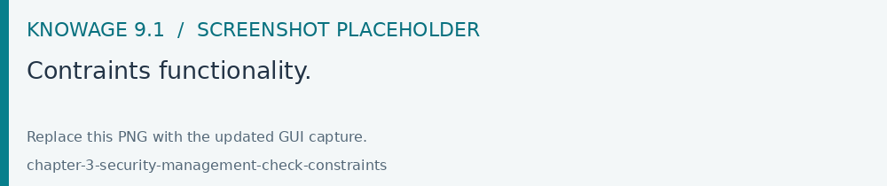
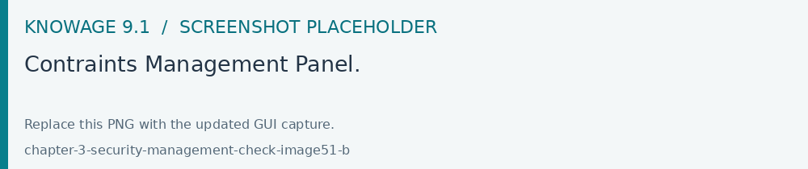

Creating a validation rule
Open Modules > Behavioural Model > Constraints Management to maintain parameter validation rules. After saving a rule, associate it with the required analytical-driver use mode and test accepted and rejected values through the consuming document.
Knowage supports the validation of the document’s input parameters via validation rules. Validation rules can be defined in Behavioural model > Constraints Management.

Fig. 40 Contraints functionality.
A validation rule checks parameter values as given by LOVs to verify that they comply with the defined constraints.

Fig. 41 Contraints Management Panel.
Knowage default checks are:
Alfanumeric: it checks if the parameter is alfanumeric;
Numeric: it checks if the parameter is numeric;
Letter String: it checks if the parameter is a letter string;
E-Mail: it checks if the parameter is an e-mail;
Fiscal Code: it checks if the parameter has the correct syntax of a fiscal code;
Internet Address: it checks if the parameter is an internet address.
If the administrator needs to create additional validation rules, he can click on to open the rule creation interface. Here he can define a customized validation rule using the available check options:

Date: here you can set a customized format type of date;
Regular Expression: to set a regular expression validation rule;
Max/Min Length: it lets you set the maximum and/or minimum character parameters length;
Range: to set a range the parameters value has to satisfy;
Decimal: to set a maximal decimal places for the parameters.